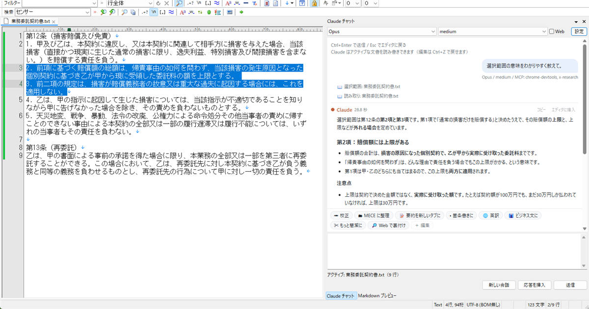
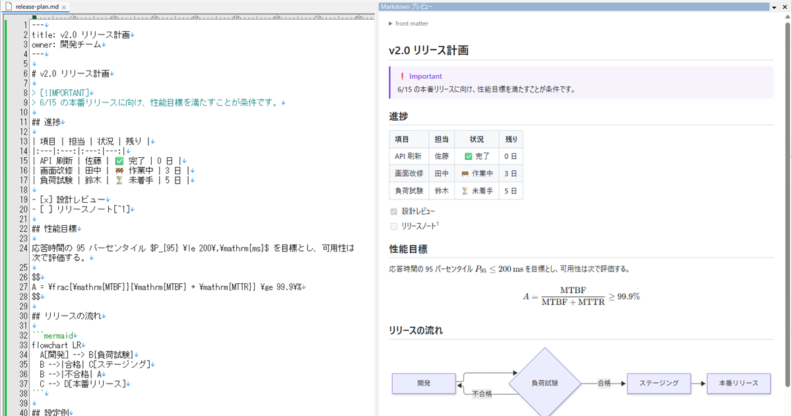

Claude チャット
サイドパネルで Claude Code と会話。開いている文書を Claude が読み、Ctrl+Z で戻せる形で直接書き換えます。API キー不要、ワンタッチのお願いテンプレート付き。
詳しく見るEmEditor をもっと便利にする、自作プラグインの置き場です。
軽いメモや単発の文章を、いつもの EmEditor のまま気持ちよく扱うための道具を作っています。

サイドパネルで Claude Code と会話。開いている文書を Claude が読み、Ctrl+Z で戻せる形で直接書き換えます。API キー不要、ワンタッチのお願いテンプレート付き。
詳しく見る
編集中の Markdown を GitHub に近い見た目でリアルタイム表示。GFM、コードの色分け、数式（KaTeX）、図（Mermaid）、脚注に対応。スクロール連動・ダブルクリックでジャンプ。
詳しく見るEmEditor のプラグインは C++ の DLL です。公式マニュアルは Visual C++ 2012 時代の内容のため、2026 年の環境で作るときのハマりどころや、 WebView2・MCP サーバーをプラグインに組み込む方法を docs/ にまとめています。 雛形から新しいプラグインを作るスクリプトもあります。